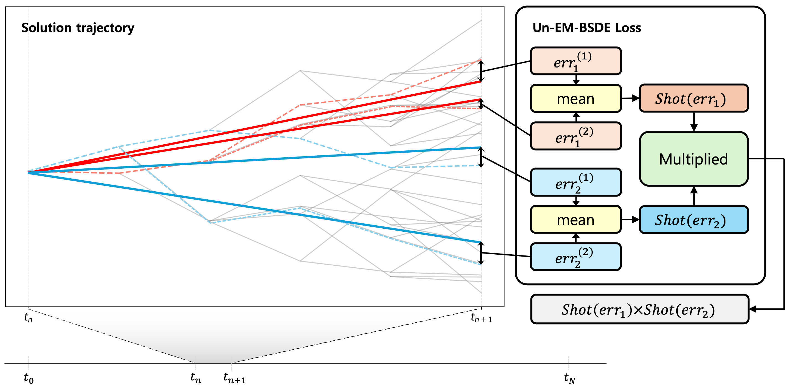

Abstract
Deep learning methods based on backward stochastic differential equations (BSDEs) have emerged as competitive alternatives to physics-informed neural networks (PINNs) for solving high-dimensional partial differential equations (PDEs). By leveraging probabilistic representations, BSDE approaches can avoid the curse of dimensionality and often admit second-order-free training objectives that do not require explicit Hessian evaluations. It has recently been established that the commonly used Euler–Maruyama (EM) time discretization induces an intrinsic bias in BSDE training losses. While high-order schemes such as Heun can fully eliminate this bias, such schemes re-introduce second-order spatial derivatives and incur substantial computational overhead. In this work, we provide a principled analysis of EM-induced loss bias and propose an unbiased, second-order-free training framework that preserves the computational advantages of BSDE methods.
Proposed Method
We propose an Un-EM-BSDE loss that removes the discretization-induced bias while keeping the computational cost comparable to the standard EM-BSDE objective. We also show that the resulting estimator has a variance comparable to that of the original EM-BSDE loss.
Motivated by a bias-variance decomposition perspective and inspired by related constructions in Hu et al. (2025), we propose the Un-EM-BSDE objective. The key idea is to form the objective using independent draws of the one-step error, so that the expectation is factorized. Since each factor provides an unbiased estimate of its corresponding continuous-time quantity, their product yields an unbiased estimator for the target objective.

Conclusion
We presented an unbiased training objective for EM-BSDE–type solvers that removes discretization-induced bias without requiring explicit second-order derivative computations. Across standard benchmarks and more practically motivated extensions, the proposed method achieves consistently strong accuracy while keeping training time comparable to EM-BSDE and substantially lower than Hessian-based unbiased alternatives. Moreover, the same randomized construction can be used as a plug-in correction for other biased one-step objectives, as illustrated by debiasing the Shotgun loss. Future work includes integrating the proposed method with adaptive time-stepping to better allocate computation across time and improve efficiency on stiff or multi-scale dynamics.
BibTeX
TBD